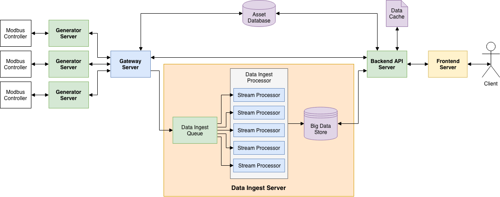

Evan Langlais
I'm a computer enthusiast and I have a website to prove it.
About Me
A UConn graduate living and working in NYC, I've been programming and tinkering with computers and technology since the age of 11. I have a passion for creating things.
I became a sole proprietor under the name of Treehouse Technologies in the year 2012 as a freshman in highschool, playing around with various aspects of tech such as video game development, server hosting, system building, and ultimately freelance software development. That passion for computers eventually led me to major in the Computer Science Field.
Outside of tech, I enjoy creating music and videos, learning new things, and petting dogs.
Education
University of Connecticut - Storrs, CT
2015 - 2019
Bachelor of Science in Engineering
Computer Science and Engineering - Magna Cum Laude
Active Projects / Ventures
HUE
A simple color matching game
HUE is a simple color matching game that was in development for the better part of the last two years, starting as a spiritual successor from a different original game called Occasionally Blue. The player uses the full screen to intuitivly select a color that is compared against a set of shapes randomly drawn on the screen utilizing the Delta-E 2000 algorithm.
HuskyTHON
A cross platform mobile application for the HuskyTHON Dance Marathon at the University of Connecticut.
The HuskyTHON Application is a modern web application that allows participants of the HuskyTHON Dance Marathon event at the University of Connecticut to keep up to date with various fundraising events, personal and team fundraising progress, and information regarding the dance marathon.
It also utilizes a PHP backend with caching to create a basic API for brokering information from various other sources such as fundraising progress.
Past Projects / Ventures
Emergency Generators "On-the-Cloud"
2018-2019
The senior design project as part of UConn's engineering curriculum. The problem / request came from a Connecticut company which installs and maintains Kohler generators.
Led a team of 6 academic peers to fulfill client requirement of allowing technicians to view data of, and send commands to, an existing infrastructure of over 7000 generators throughout the northeast, via a web app.
I became the project's lead architect, and after reading IOT and big-data white papers provided by our academic advisor I planned a five stage pipeline which would theoretically allow a full rollout of retrofitting the 7000+ generators, fully supporting the amount of data processing that would be associated with it. To implement the project, the team worked together to plan all necessary tasks, those tasks' dependencies, and estimated amount of work. Together, we were able to create a fully working prototype several weeks before UConn's Demo Day 2019.
The five stage data pipeline included
- Attaching a Raspberry Pi to the generator's computer, running a Go app to communicate via the MODBUS protocol to read sensor data and change generator settings. Data was packaged into efficient structures via Arvo and sent to gateway server
- The Go gateway server/router served several purposes, the main two being 1) keeping tabs on generator uptime by issuing heartbeats and 2) route incoming data packages to the processing pipeline and outgoing commands to the proper generator connection
- The processing pipeline started with a Kafka cluster to ensure scalability, and data was consumed via a Scala app that would spun up in a Spark cluster. The Scala app would unpack the data and transform the input into time-series data, POSTing that to an OpenTSDB database
- An express.js REST API was utilized to return generator inventory from MariaDB and their respective statuses from the gateway server, sensor time-series data, and relay commands back to the generator
- An Angular web-app provided a dashboard for a technician to log in, view the health of all generators they have permission to view, and visualize sensor data over time utilizing chart.js
Treehouse Technologies
2010 - 2018
A sole proprietorship created to encapsulate various software products, system building services, and consulting.
Treehouse Technologies was originally founded by myself and two friends with a wildly ambitious vision of building video games to compete with AAA game studios. After the other two founding members left, I registered Treehouse Technologies as a sole proprietorship in my freshman year of high-school. From that point, the Treehouse Technologies brand became one of self and business experimentation--constantly exploring new technology and business ventures.
I credit most of the problem solving and programming skills that I use today (both personally and professionally) to be a result of the creative experimentation that Treehouse Technologies enabled.
TF2 Finance
A cross platform mobile application for displaying price information important to the trading platform of Team Fortress 2.
Started as a personal project all the way back in 2014, the new version of the TF2 Finance app is a modern web application that utilizes Backpack.tf's currency API to display information and graphs regarding TF2 items such as Keys, Refined Metal, and Earbuds. Other features include converting currencies into other forms (including USD) and graphing price history for the application.
It also utilizes a PHP backend with caching to create a basic API for brokering information from various sources.
Get in touch
Feel free to contact me with questions about the information above via email or the various socials below.
© Evan Langlais. All rights reserved. Design: HTML5 UP.